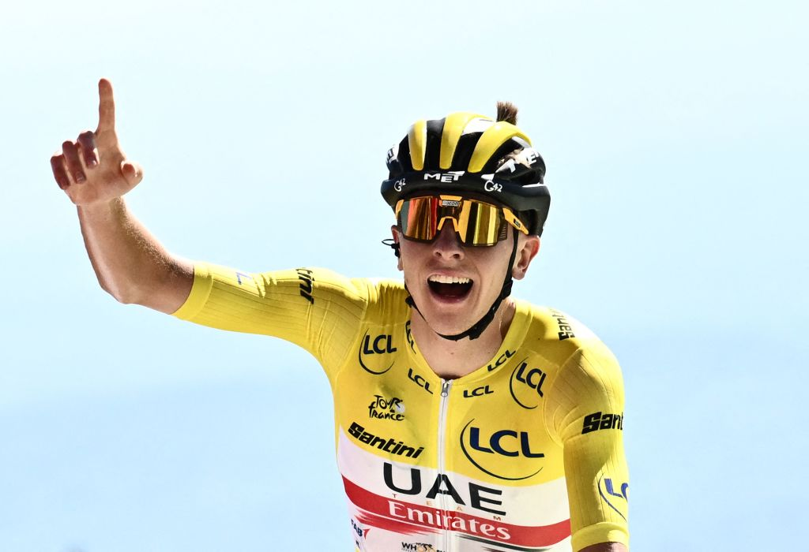
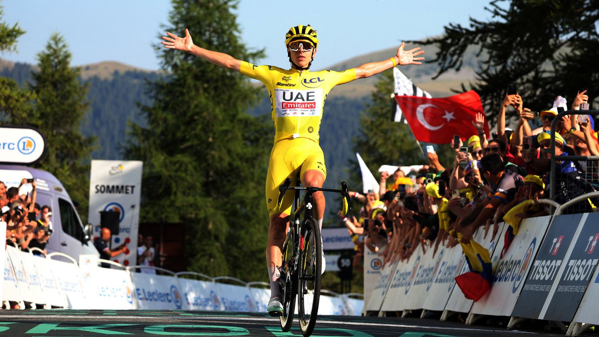
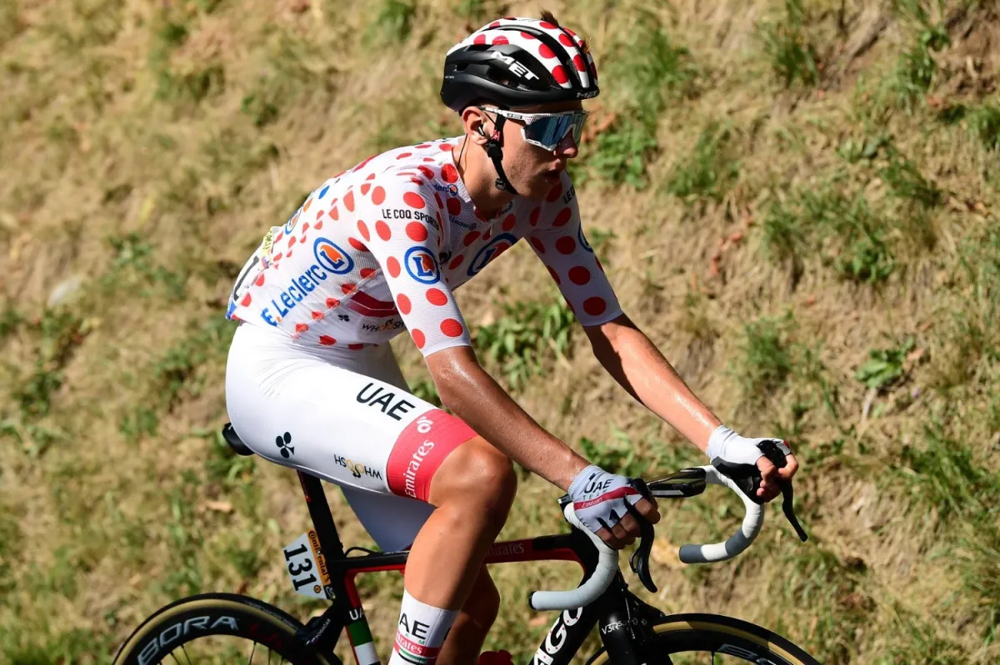
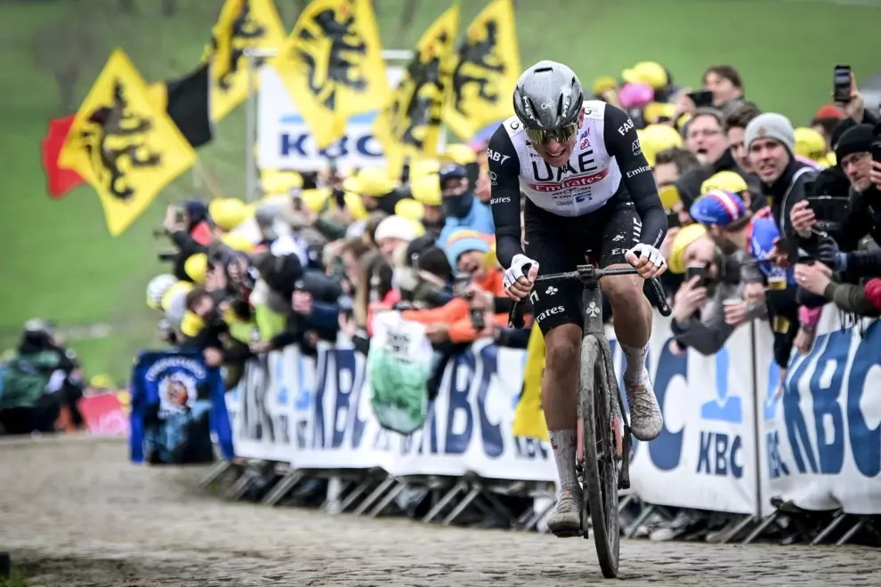

Tadej Pogačar
El Caníbal del Siglo XXI
Ciclista profesional esloveno, doble ganador del Tour de Francia y figura dominante del ciclismo moderno, conocido por su versatilidad y ataques explosivos.
El Caníbal del Siglo XXI
Ciclista profesional esloveno, doble ganador del Tour de Francia y figura dominante del ciclismo moderno, conocido por su versatilidad y ataques explosivos.
🏆
Primer Tour de Francia: Se convierte en el segundo ciclista más joven en ganar el Tour.
🥇
Doble Corona: Gana su segundo Tour de Francia y la medalla de bronce en los JJ.OO. de Tokio.
⛰️
Rey de la Montaña: Demuestra su supremacía en las etapas de alta montaña del Tour.
🍂
Il Lombardía: Conquista este prestigioso Monumento en dos ocasiones consecutivas.

👑
Tour de Flandes: Una victoria histórica en uno de los Monumentos más duros del ciclismo.
🌟
Giro de Italia: Domina la Corsa Rosa sumando su tercera Gran Vuelta.

"Si disfrutas de lo que haces, no se siente como un trabajo." — Tadej Pogačar